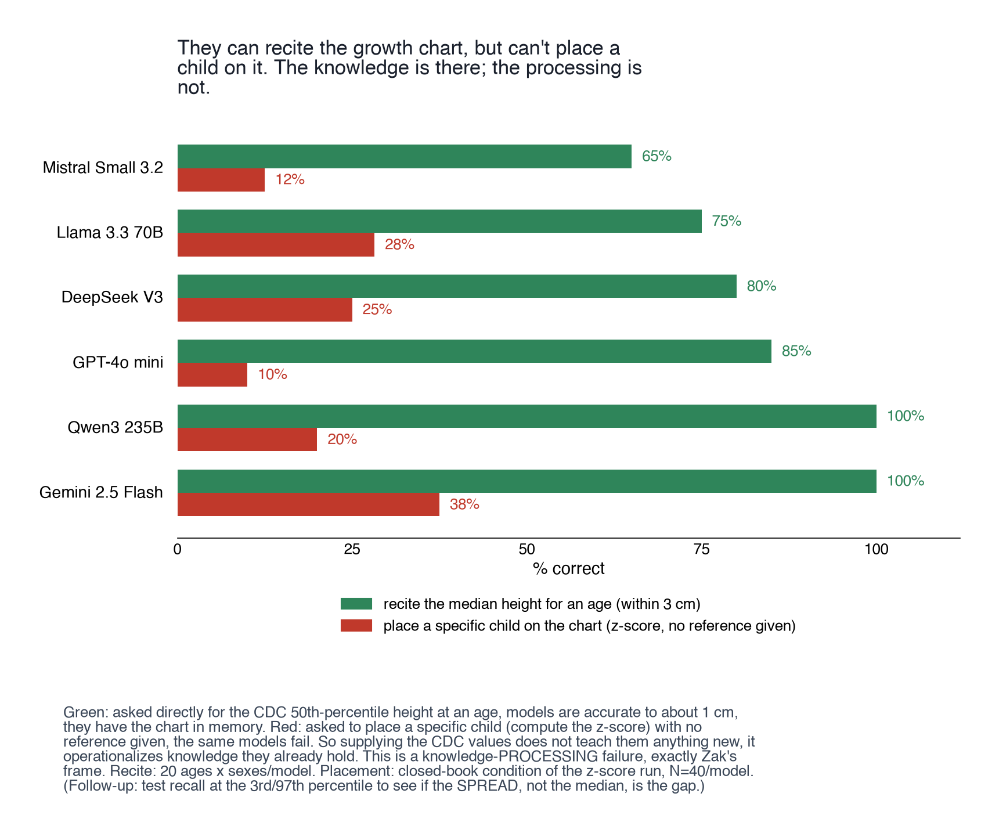

Height z-score computation by language models
CLI benchmark scoring models against the referral threshold
- skills
- benchmark design · clinical safety metric design · prompt ablation design · LLM evaluation · reproducible CLI tooling
- tools
- data
- CDC 2000 stature-for-age LMS · WHO 2006 length/height-for-age LMS
- status
- in progress
question
Can a model compute a child's height-for-age z-score from the CDC reference and land on the right side of the referral line?


what came out
- placement collapses exactly where a screener has to be right: very short and borderline children. average-height kids are easy for everyone.
- handing over the CDC values for that age lifts every model, and does not rescue the weakest ones.
- the formula on its own does almost nothing. the reference values are what move it.
- they can recite the median height for an age to about a centimetre, then fail to place a specific child on the chart. the knowledge is there; the processing is not.
calls made
- scored as a clinically safe rate against the -2 SDS referral threshold, not RMSE. a small numeric miss across that line is a missed diagnosis, not a near miss.
- height-for-age only. growth-disorder screening keys off it; weight enters through a different chart answering a different question.
- formula-provided as the default condition, with closed book and fully open bracketing it. that is the condition matching how a model would actually be used.
- WHO under 24 months, CDC from 24 months up. the CDC table is not valid below 24 months and the AAP recommends the split.
- one OpenRouter key routing every model, direct provider keys kept as an option. one account, one code path.
what broke
- provider APIs would not accept the harness's determinism settings, so temperature and seed handling is special-cased per model family. one reasoning model refuses the deterministic setting outright.
- short token budgets truncated the JSON answer, which looked like a parsing failure rather than a length limit.
- the Google direct API silently drops the reproducibility parameters the rest of the harness sets.
not shown
- results here are the ones from the lab walkthrough figures; the fuller model set sits with a paper in progress